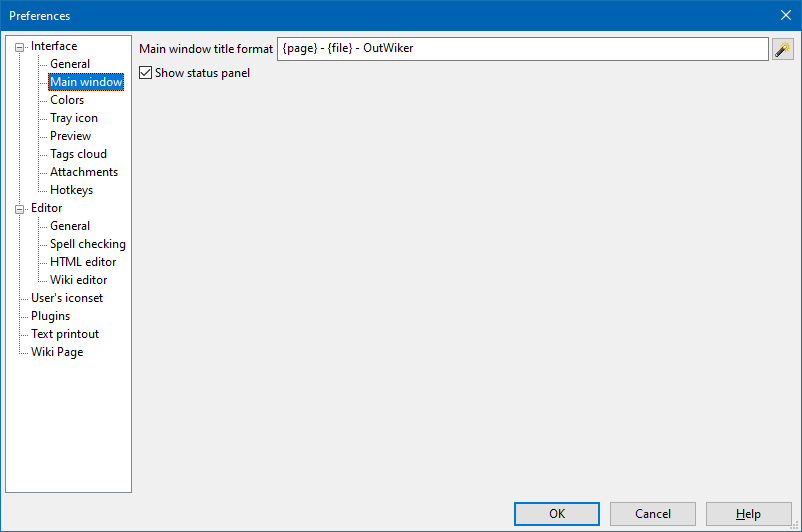

Interface - Main window

The Main window title format input field determines how the title of the main window should look like. The following macros can be used:
- {page} substitutes title of the current note;
- {file} substitutes the note's tree name;
- {subpath} substitutes path to the current note relative to the tree root.
The Show status panel check box allow you show or hide the panel located at the bottom of the main program window.